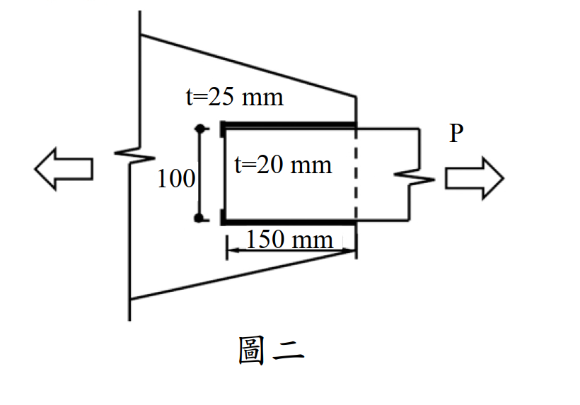
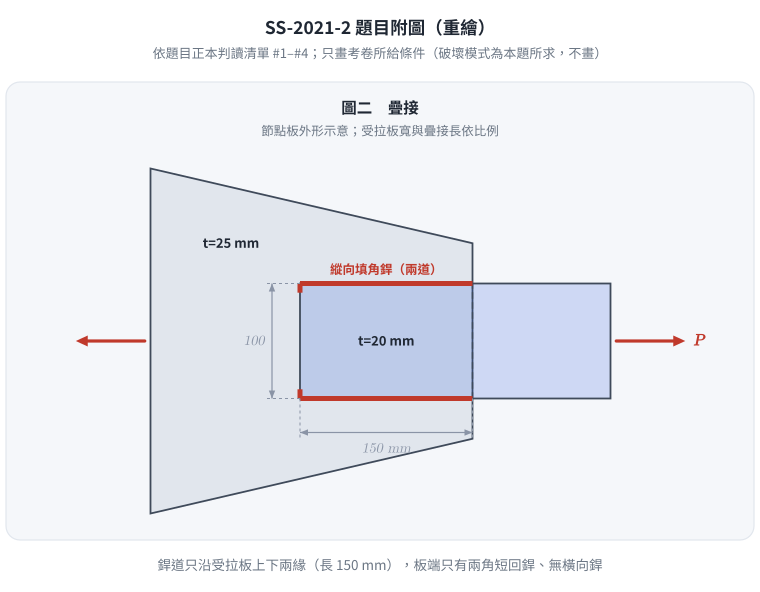
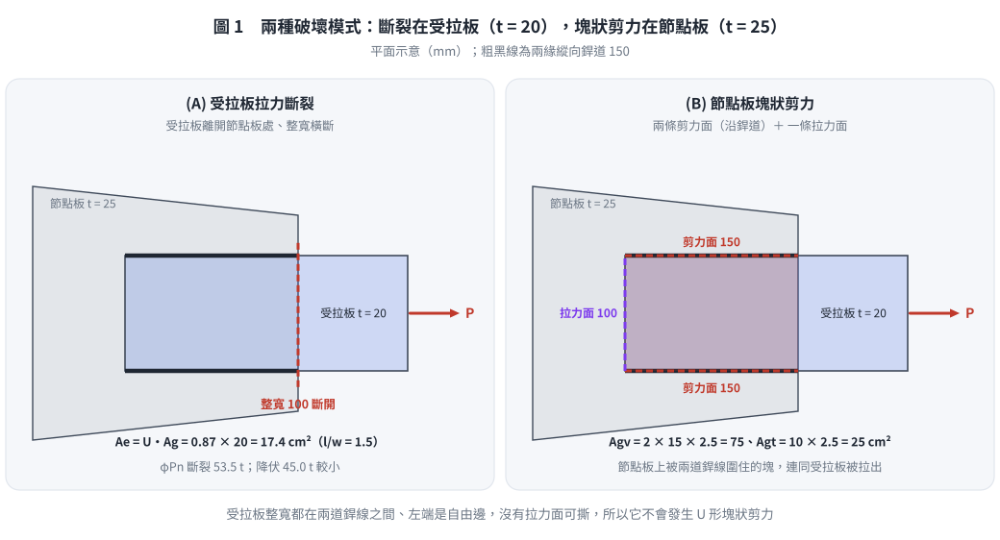
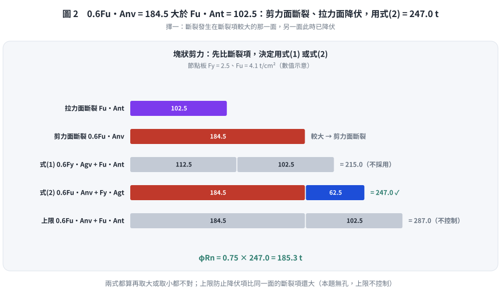

📄 題目正本：考卷原文・附圖・判讀清單（已確認）
SS-2021-2 題目正本
本檔只記錄考卷上寫了什麼、圖上畫了什麼，不含任何解法。解析見同資料夾
SS-2021-2.md。
判讀清單經使用者確認前，狀態為「待確認」；確認後本檔原則上不再修改（改動須回考卷原圖並記 log）。
| 項目 | 內容 |
|---|---|
| 考卷 | raw/exams/SS-2021_鋼結構設計.pdf 第 1 頁（頁次 3－1），第二題；參考公式在第 3 頁 |
| 考年 | 民國 110 年（2021） |
| 配分 | 20 分 |
| 附圖 | 1 張（圖二：疊接拉力接合），SS-2021-2-fig-1.png |
| 判讀狀態 | 已確認（2026-11-02 使用者確認，含「不確定」項之解讀；轉錄同日，PyMuPDF 110 dpi 全頁＋圖二 400 dpi 局部目視，盲讀後才比對既有解析） |
1. 考卷原文（逐字）
二、圖二所示拉力構材為 SM400 鋼材，$F_y = 2.5$ tf/cm²，$F_u = 4.1$ tf/cm²，$E = 2040$ tf/cm²，板厚分別為 $t = 20$ mm 及 $t = 25$ mm，採用填角銲道疊接，請分別繪製發生拉力斷裂及塊狀剪力破壞之模式，依現行鋼結構極限設計法規範，塊狀剪力破壞拉力強度依式(1)及式(2)計算後擇一，且不大於 $0.6F_uA_{nv} + F_uA_{nt}$。請詳細說明式(1)中 $0.6F_yA_{gv}$ 之 $0.6F_y$ 所代表之意義；又，請詳細說明塊狀剪力破壞式(1)及式(2)擇一且不大於 $0.6F_uA_{nv} + F_uA_{nt}$ 之原因。（20 分）
$$\phi R_n = \phi(0.6F_yA_{gv} + F_uA_{nt}) \le \phi(0.6F_uA_{nv} + F_uA_{nt}) \;\cdots\cdots(1)$$
$$\phi R_n = \phi(0.6F_uA_{nv} + F_yA_{gt}) \le \phi(0.6F_uA_{nv} + F_uA_{nt}) \;\cdots\cdots(2)$$
2. 考卷給的公式、附表與參數
- 題文：SM400，$F_y = 2.5$、$F_u = 4.1$、$E = 2040$ tf/cm²；板厚 20 mm 與 25 mm；式(1)、式(2)（照錄於 §1）。
- 第 3 頁「參考公式：請自行選擇適合的公式，並檢查其正確性，若有問題應自行修正。」與本題相關者照錄：
$$\text{當 } F_uA_{nt} \ge 0.6F_uA_{nv} \text{ 時}\quad \phi R_n = \phi(0.6F_yA_{gv} + F_uA_{nt}) \le \phi(0.6F_uA_{nv} + F_uA_{nt})$$
$$\text{當 } 0.6F_uA_{nv} \ge F_uA_{nt} \text{ 時}\quad \phi R_n = \phi(0.6F_uA_{nv} + F_yA_{gt}) \le \phi(0.6F_uA_{nv} + F_uA_{nt})$$
$$\phi = 0.75$$
（題文只說「擇一」，擇一的判別條件印在第 3 頁。）
- 卷首注意事項：㈠可用計算器、㈡不必抄題、㈢除專門名詞或數理公式外應使用本國文字作答。
3. 附圖

圖面文字照錄：t=25 mm；t=20 mm；100；150 mm；P；圖二。
4. 判讀清單
「把握」標不確定者請優先確認；解讀類項目（題目用字的意思）另標「解讀」。
| # | 項目 | 判讀 | 圖上／題文依據 | 把握 |
|---|---|---|---|---|
| 1 | 構件分工 | $t = 20$ mm 為受拉板（右端受 $P$）；$t = 25$ mm 為梯形節點板（左端承接） | 圖二標註位置（400 dpi） | 確定 |
| 2 | 100 | 受拉板寬度（單位未標，依圖中另一尺寸「150 mm」判為 mm） | 尺寸線端點在受拉板上下緣 | 確定 |
| 3 | 150 mm | 疊接長度＝縱向銲道長度 | 尺寸線自板端到節點板右緣 | 確定 |
| 4 | 銲道配置 | 兩道縱向填角銲沿受拉板上下兩緣；板端無橫向銲，只在兩角有短回銲 | 粗線只在上下緣，左緣細線，兩角短粗線（400 dpi） | 確定 |
| 5 | 題目要求 | 繪拉力斷裂與塊狀剪力破壞模式＋文字說明兩項原因；不要求算出數值 | 題文 | 確定（解讀） |
| 6 | 繪圖對象 | 拉力斷裂與塊狀剪力都要考慮受拉板與節點板兩者（題文說「板厚分別為」兩種） | 題文 | 不確定 → 使用者確認 |
| 7 | 「擇一」 | 依第 3 頁條件：$F_uA_{nt} \ge 0.6F_uA_{nv}$ 用式(1)，否則用式(2) | 第 3 頁參考公式 | 確定 |
轉錄：2026-11-02（SS-U1-1 題目正本推廣・批 3）｜確認：2026-11-02 使用者確認
考題編號：SS-2021-2
主分類： SS-U1-1 拉力及壓力桿件
副分類： SS-U1-4 接合之分析與設計
設計法： LRFD
標籤： 拉力桿件 塊狀剪力 銲接拉力接合 填角銲 疊接 斷裂模式 0.6Fy意義 剪力降伏 節點板塊狀剪力
1. 題目（考卷原文見題目正本）
考卷原文、公式／附表、附圖與判讀清單（已確認）見
SS-2021-2-problem.md。本節只列解題時最容易讀錯的地方與本解使用的記號；題意以題目正本為準。

圖 1 題目附圖重繪（依題目正本判讀清單 #1–#4；節點板外形為示意，破壞模式為本題所求不畫）。銲道只畫在受拉板上下兩緣、板端左緣不畫橫向銲，攔下把三面圍銲當成題目條件、或把兩塊板厚對調的誤讀。
常見誤讀
| 項目 | 正確判讀 | 常見誤讀 |
|---|---|---|
| 兩板分工 | $t = 20$ mm 為受拉板（寬 100 mm）；$t = 25$ mm 為梯形節點板 | 兩板角色對調 |
| 銲道 | 上下兩道縱向銲，長 150 mm；板端只有兩角短回銲，沒有橫向銲 | 當成三面圍銲 |
| 所求 | 繪破壞模式並說明原因；數值只作說明 | 只算數值不畫圖 |
| 擇一 | 第 3 頁條件：$F_uA_{nt} \ge 0.6F_uA_{nv}$ 用式(1)，否則用式(2) | 取兩式較大或較小者 |
本解記號： 受拉板 $w = 10$ cm、$t = 2.0$ cm；節點板 $t = 2.5$ cm；銲長 $l = 15$ cm；$F_y = 2.5$、$F_u = 4.1$ tf/cm²；$\phi = 0.75$（塊狀剪力）。
2. 考題核心精神與出題者意圖 (Core Concepts & Examiner's Intent)
核心觀念： 銲接疊接的兩種破壞位置不同——拉力斷裂發生在受拉構材（含剪力遲滯），塊狀剪力發生在節點板（被兩道銲線圍住的那一塊被撕出）；再說明塊狀剪力公式「剪力降伏／斷裂 ＋ 拉力斷裂／降伏」組合與上限的由來。
出題者考查重點：
1. 能從圖上判斷哪一塊板、沿哪幾條線破壞。
2. $0.6F_y$ 是剪力降伏應力（von Mises：$F_y/\sqrt3$）。
3. 擇一準則與上限的力學理由。
3. 解題戰略地圖與陷阱分析 (Strategic Roadmap & Trap Analysis)
關鍵陷阱：
⚠️ 陷阱 1：寬度與疊接長度看反。 垂直的 100 是板寬，水平的 150 是銲長。看反會把破壞面畫錯方向、剪力遲滯也算錯（$l/w = 1.5$，不是 0.67）。
⚠️ 陷阱 2：塊狀剪力畫在受拉板上。 受拉板整個寬度都夾在兩道銲線之間，左端是自由邊，撕不出「U 形塊」；會被撕出 U 形塊的是 $t = 25$ mm 節點板：兩道銲線是剪力面，銲線左端連線是拉力面。
⚠️ 陷阱 3：擇一準則說成「取兩式較大／較小者」。 準則是比較兩個斷裂項：$F_uA_{nt} \ge 0.6F_uA_{nv}$ 用式(1)，否則用式(2)。
⚠️ 陷阱 4：$0.6F_y$ 說成安全係數。 它是剪力降伏應力。
3.5 變數層次分析（Variable Hierarchy Analysis）
複習提示：解題後，在每個卡住的知識點「卡關?」欄標記
⚠；第二次複習時只看有⚠的項目。
最終目標： 繪製拉力斷裂與塊狀剪力破壞模式 → 說明 $0.6F_y$ → 解釋擇一準則與上限（概念題；以下數值僅供說明）
L1：題目直接給定
| 符號 | 數值 | 說明 |
|---|---|---|
| $F_y$、$F_u$ | 2.5、4.1 tf/cm² | SM400 |
| 受拉板 | $t = 20$ mm，寬 $w = 100$ mm | 構材 |
| 節點板 | $t = 25$ mm | 梯形 |
| 銲長 $l$ | 150 mm（上下各一道） | 疊接長度 |
| $\phi$ | 0.75 | 塊狀剪力 |
L2：需知識點推導
| 符號 | 公式 / 來源 | 卡關? |
|---|---|---|
| 受拉板 $A_g$ | $10 \times 2.0 = 20$ cm² | |
| $U$ | 板件縱向銲 $l/w = 150/100 = 1.5$ → $U = 0.87$（$2w > l \ge 1.5w$） | ⚠ |
| 構材降伏 | $0.9 \times 2.5 \times 20 = 45.0$ t | |
| 構材斷裂 | $0.75 \times 4.1 \times 0.87 \times 20 = 53.5$ t | |
| 節點板 $A_{gv} = A_{nv}$ | $2 \times 15 \times 2.5 = 75$ cm²（兩道銲線） | ⚠ |
| 節點板 $A_{gt} = A_{nt}$ | $10 \times 2.5 = 25$ cm²（銲線左端連線） | |
| 擇一判斷 | $F_uA_{nt} = 102.5 < 0.6F_uA_{nv} = 184.5$ → 用式(2) | |
| 式(2) | $184.5 + 2.5 \times 25 = 247.0$ t ≤ 上限 287.0 t → $\phi R_n = 185.3$ t |
L3：深層知識（不懂就卡住）
| 知識點 | 說明 | 卡關? |
|---|---|---|
| $0.6F_y$ | von Mises：純剪降伏 $\tau_y = F_y/\sqrt3 = 0.577F_y \approx 0.6F_y$ | |
| 塊狀剪力是「斷裂」現象 | 破壞以某一面斷裂結束；另一面在斷裂發生時已達降伏 | |
| 擇一準則 | 斷裂發生在斷裂強度較大的那一面，另一面取降伏 | |
| 上限 | 兩面都斷裂為強度上界；降伏項不得因 $A_g > A_n$ 而算出比斷裂更大的值 | |
| 板件縱向銲 $U$ | $l \ge 2w$：1.0；$2w > l \ge 1.5w$：0.87；$1.5w > l \ge w$：0.75 |
4. 步驟化詳細計算過程 (Step-by-Step Detailed Calculation)
一、繪製破壞模式
(A) 拉力斷裂（受拉構材 $t = 20$ mm）
節點板 t=25 │← 節點板右緣
┌────────────────────────────┤
│ ══════════════════════╪═══╗ ═══ 上緣銲道（l = 150）
│ ║ 受拉板 t=20 ✂│ ║
◁│ ║ 寬 w = 100 ✂│ ║ ▷ P
│ ║ ✂│ ║
│ ══════════════════════╪═══╝ ═══ 下緣銲道（l = 150）
└────────────────────────────┤
✂ = 斷裂線：受拉板在節點板邊緣處整寬橫向斷開
- 位置：受拉板在銲道右端、離開節點板處的橫斷面（力全部集中在板上、尚未進入銲道之處）。
- 斷面：$A_n = A_g = 10 \times 2.0 = 20$ cm²（無孔），只有兩緣有銲，需乘剪力遲滯 $U$：
$l/w = 150/100 = 1.5$ → $U = 0.87$ → $A_e = 17.4$ cm²，$\phi_tP_n = 0.75 \times 4.1 \times 17.4 = 53.5$ t（降伏 45.0 t 較小，構材由降伏控制）。
(B) 塊狀剪力（節點板 $t = 25$ mm）
┌──────────────────────────┐
│ ┏━━━━━━━━━━━━━━━━━━━━┥ ← 剪力面 1：沿上緣銲道，長 150
│ ┃ ← 拉力面 │
│ ┃ （銲道左端連線， │ 被撕出的 U 形塊（100 × 150）
│ ┃ 長 100） │ 隨受拉板一起往右被拉出
│ ┗━━━━━━━━━━━━━━━━━━━━┥ ← 剪力面 2：沿下緣銲道，長 150
└──────────────────────────┘
- 節點板上被兩道銲線圍住的 100 × 150 矩形，以「兩條剪力面（沿銲線）＋一條拉力面（銲線左端連線）」整塊撕出。
- $A_{gv} = A_{nv} = 2 \times 15 \times 2.5 = 75$ cm²，$A_{gt} = A_{nt} = 10 \times 2.5 = 25$ cm²（銲接無孔）。
- 受拉板本身不會發生 U 形塊狀剪力：它整個寬度都在兩道銲線之間，左端是自由邊，沒有拉力面可撕；它只可能沿銲趾剪斷（$0.75 \times 0.6 \times 4.1 \times 2 \times 15 \times 2.0 = 110.7$ t），或在上述 (A) 斷裂。
數值示意（題目未要求）：
| 項目 | 數值 |
|---|---|
| $F_uA_{nt}$ | $4.1 \times 25 = 102.5$ t |
| $0.6F_uA_{nv}$ | $0.6 \times 4.1 \times 75 = 184.5$ t（較大 → 剪力面斷裂、用式(2)） |
| 式(1) | $0.6 \times 2.5 \times 75 + 102.5 = 215.0$ t |
| 式(2) | $184.5 + 2.5 \times 25 = 247.0$ t |
| 上限 | $184.5 + 102.5 = 287.0$ t |
| $\phi R_n$ | $0.75 \times 247.0 = 185.3$ t |

圖 1 兩種破壞模式：拉力斷裂發生在受拉板（離開節點板處整寬斷開），塊狀剪力發生在節點板（兩剪力面沿銲道、拉力面在銲道左端）。這張圖攔的是把斷裂畫在節點板、把 U 形塊狀剪力畫在受拉板，或把拉力面放錯位置。
二、$0.6F_y$ 的意義
$0.6F_y$ 是鋼材的剪力降伏應力 $\tau_y$。依 von Mises（畸變能）降伏準則，純剪狀態下
$$\tau_y = \frac{F_y}{\sqrt3} = 0.577F_y \approx 0.6F_y$$
所以 $0.6F_yA_{gv}$ 是「剪力面全斷面（毛面積）剪力降伏」時能承擔的力。用毛面積，是因為降伏是沿整個剪力面發生的大變形現象（與 $F_yA_g$ 用毛面積同理）；斷裂則發生在最小斷面，所以斷裂項用淨面積 $0.6F_uA_{nv}$（剪力斷裂強度約為 $0.6F_u$）。
三、擇一與上限的原因
(A) 為何擇一
塊狀剪力的破壞以斷裂收場：一個面斷開時，整塊才會被拉出。兩個面的變形能力不同——拉力面短、剪力面長，兩個面不會同時達到斷裂。規範（AISC 1993 LRFD，與我國 99 年版極限設計法同源）的假設是：
- 斷裂發生在斷裂強度較大的那一面；斷裂發生時，另一面早已降伏（延性好，變形跟得上）。
- 因此先比較兩個斷裂項：
- $F_uA_{nt} \ge 0.6F_uA_{nv}$：拉力面斷裂、剪力面降伏 → 式(1) $0.6F_yA_{gv} + F_uA_{nt}$
- $0.6F_uA_{nv} > F_uA_{nt}$：剪力面斷裂、拉力面降伏 → 式(2) $0.6F_uA_{nv} + F_yA_{gt}$
兩式各自代表一種「一面斷裂＋一面降伏」的機構，只有斷裂項較大的那一個符合實際破壞順序，所以是擇一，不是兩式都算再取大或取小。
(B) 為何不大於 $0.6F_uA_{nv} + F_uA_{nt}$
- 式(1)的剪力項用毛面積降伏 $0.6F_yA_{gv}$，式(2)的拉力項用 $F_yA_{gt}$。當孔多、孔大使 $A_{nv}$ 遠小於 $A_{gv}$（或 $A_{nt}$ 遠小於 $A_{gt}$）時，「降伏項」可能算得比同一面的「斷裂項」還大，這在物理上不成立——一個面在降伏前就會先在淨斷面斷裂。
- 兩面都斷裂 $0.6F_uA_{nv} + F_uA_{nt}$ 是這個 U 形塊所能傳的力的上界，所以兩式都要以它為上限。
本題銲接無孔，$A_{nv} = A_{gv}$、$A_{nt} = A_{gt}$，又 $F_u > F_y$，上限不會控制；有螺栓孔的接合才可能被上限截斷。

圖 2 擇一：$0.6F_uA_{nv} = 184.5$ 大於 $F_uA_{nt} = 102.5$，剪力面斷裂、拉力面降伏，用式(2) = 247.0 t，$\phi R_n = 185.3$ t；上限 287.0 不控制。這張圖攔的是兩式都算後取大或取小、用降伏項決定擇一，或以為無孔時上限會控制。
計算彙整
| 項目 | 說明 |
|---|---|
| 拉力斷裂 | 受拉板（$t = 20$），銲道右端整寬 100 mm 橫向斷開；$U = 0.87$ |
| 塊狀剪力 | 節點板（$t = 25$），兩條 150 mm 剪力面＋一條 100 mm 拉力面 |
| $0.6F_y$ | 剪力降伏應力 $\approx F_y/\sqrt3$ |
| 擇一 | 比較 $F_uA_{nt}$ 與 $0.6F_uA_{nv}$，斷裂發生在較大者 |
| 上限 | 兩面皆斷裂為上界，防止降伏項高估 |
5. 關鍵爭議點與進階探討 (Critical Issues & Advanced Discussion)
新規範已改寫這兩條式子
AISC 360-05 起（我國尚未跟進），塊狀剪力改為單一式：
$$R_n = 0.6F_uA_{nv} + U_{bs}F_uA_{nt} \le 0.6F_yA_{gv} + U_{bs}F_uA_{nt}$$
拉力面一律取斷裂（$U_{bs} = 1$ 均勻、0.5 不均勻），剪力面取「斷裂」與「降伏」的較小者。理由是試驗顯示拉力面總是斷裂，舊式「擇一」的機構假設與試驗不符，且有時會得到不保守的結果。
| 本題（節點板） | 舊式（考卷） | AISC 360-16／-22 |
|---|---|---|
| 剪力項 | 式(2)：$0.6F_uA_{nv} = 184.5$ | $\min(0.6F_uA_{nv}, 0.6F_yA_{gv}) = \min(184.5, 112.5) = 112.5$ |
| 拉力項 | $F_yA_{gt} = 62.5$ | $F_uA_{nt} = 102.5$ |
| $R_n$ | 247.0 t | 215.0 t |
| $\phi R_n$ | 185.3 t | 161.3 t |
考場答題要點
- 圖：兩張圖都要標出是哪一塊板、哪幾條線、哪個方向受力；寬 100、銲長 150 標清楚。
- $0.6F_y$：寫出 $\tau_y = F_y/\sqrt3$ 的來源。
- 擇一：寫出判斷式與「斷裂發生在斷裂強度較大的面、另一面降伏」。
- 上限：寫出「降伏項不得大於同一面的斷裂項，兩面斷裂為上界」。
修正日期：2026-11-01（依考卷原圖：垂直標註 100 mm 為受拉板寬、水平 150 mm 為疊接（銲道）長度，原解兩者對調；塊狀剪力發生於 $t = 25$ mm 節點板（兩道銲線為剪力面、銲線左端連線為拉力面），原解畫在受拉板上；更正擇一準則說明（比較兩斷裂項，斷裂發生在較大者），補剪力遲滯 $U = 0.87$ 與數值示意；新增 AISC 360-05 以後單一式之對照）
圖解補繪：2026-11-03（向量圖 2 張，腳本 gen_SS-2021-2.py，改輸入可原地重跑；SVG 供 wiki／PDF，2× PNG 供 pptx／影片）
驗證狀態：unverified
修正日期：2026-11-02（§1 全文重述改為指向題目正本 SS-2021-2-problem.md（已確認）＋常見誤讀＋本解記號；解題內容與答案不變）
修正日期：2026-11-03（§1 補入題目附圖重繪 figs/SS-2021-2-fig-1-problem.svg（依已確認的題目正本判讀清單，腳本 gen_SS-2021-2.py，可重跑）；解題內容與答案不變）